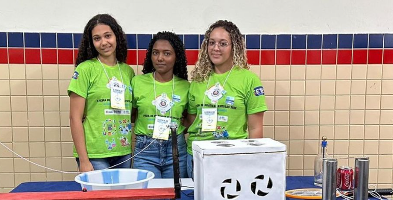

ETE - Pedro Leão Leal
Instituição
Cursos
Acadêmico
+55 (89) 3884-2928
Email
Eventos
Projetos
Formandos
Conquistas
Docentes
Laboratórios
Técnico em Administração - Ensino Médio(Integral)
Técnico em Redes de Computadores - Ensino Médio(Integral)
Técnico em Segurança no Trabalho - Subsequente(Presencial)
Técnico em Administração - Subsequente(EaD)
Técnico em Enfermagem - Subsequente(Presencial)
Técnico em Desenvolvimento de Sistemas - Subsequente(EaD)
Ingresso na instituição
Instituição no SEIP
Boletim escolar online - SIEPE
Semana da inclusão social 2023:
Carregando…
7 de Setembro em 2023:
Carnaval da ETE 2023:
II Feira de Práticas Exitosas 2023:
